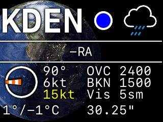

|
PiWx
|

PiWx is a configurable aviation METAR display designed to work with the Adafruit 320x240 PiTFT framebuffer display. While PiWx is hard-coded to work with the PiTFT, it should not be difficult to modify it for any display that uses a framebuffer device.
For more information about the PiTFT: https://www.adafruit.com/product/2298.
The amazing weather icons are from the Weather Underground Icons project: https://github.com/manifestinteractive/weather-underground-icons
The font used is San Francisco Monospace (SF Mono) from Xcode.
Use of this program in no way satisfies any regulatory requirement for pre- flight planning action in any country.
PiWx uses CMake 3.27 to build. The following dependencies must be installed:
After cloning the repository, use the following commands to perform a simple build:
% git clone https://github.com/slakpi/piwx.git % cd piwx % cmake -B build -DCMAKE_BUILD_TYPE=Release -DCMAKE_INSTALL_PREFIX=/usr/local . % cd build % make % sudo make install
LED support requires the ws2811 library listed above. If the ws2811 library is available on the system, PiWx will build with LED support enabled.
Configuration is relatively simple. Refer to the sample configuration file that installs to the etc directory under the install prefix. Simply copy the sample to a new file called piwx.conf.
# Comma-separated list of aiports; used directly in the URL query. stations="KHIO,KMMV,KUAO,KVUO,KSLE,KSPB,KTPA,KCGC,KGNV,KDEN"; # Airport METAR display cycle time in seconds. cycletime=5;
The Aviation Weather data API does not return stations in any particular order. The sort option allows sorting stations lexicographically, geographically, or in the order specified by the configuration file.
# Sort by geographical position. sort=position;
If sort is set to off or is not specified, stations are displayed in the order received from the Aviation Weather data API. When set to on or position, stations are displayed from West to East and North to South. When set to alpha, stations are displayed in lexicographical order, e.g. 77S sorts before KAST, and KAST sorts before KTPA. When set to query, stations are displayed in the order specified by the stations query.
With LED support enabled, PiWx will drive a 50-LED WS281x strip to display flight categories at select airports. The led<num> option assigns an airport to a LED where <num> is a number between 1 and 50 inclusive.
# Assign LEDs led1="KHIO"; led5="KMMV"; led6="KUAO"; ...
It is not necessary to assign LEDs sequentially. Unassigned LEDs will just remain off.
PiWx provides a brightness option with 256 levels of brightness where 0 or off is off and 255 is full intensity.
# Set LED brightness brightness=64;
By default, PiWx considers Civil Twilight as day. PiWx will switch an airport LED to day brightness at the beginning of local Civil Twilight and switch the LED to night brightness at the end of local Civil Twilight. The nightbrightness option controls the brightness of LEDs for airports where the local time is night.
# Set night brightness nightbrightness=8;
PiWx provides a daylight option to control the length of the day. This option can be one of: official, civil, nautical, or astronomical. These values represent respectively: sunrise to sunset, Civil Twilight, Nautical Twilight, and Astronomical Twilight.
# Change daylight to Nautical Twilight daylight=nautical;
The drawglobe option enables the display of a day/night rendering of Earth that centers on the currently displayed station and depicts the Civil, Nautical, and Astronomical twilight bands. The globe displays by default, but can be disabled by setting drawglobe to off.
# Disable day/night globe drawglobe=off;
Flight category colors, both LED and weather display, are currently fixed to the US National Weather Service colors: Green (VFR), Blue (Marginal VFR), Red (IFR), and Purple (Low IFR). The highwindspeed option may be used to color airports using Yellow if the wind or gust speed meets or exceeds the setting. By default, this value is 25 knots.
# Set high-wind threshold highwindspeed=30;
Setting highwindspeed to off disables the high-wind warning:
# Disable high-wind warning highwindspeed=off;
The highwindblink option enables alternating airports between the high-wind warning and the flight category color. For example, with blinking enabled, a VFR airport with high winds will alternate between Green and Yellow.
# Enable high-wind blinking highwindblink=on;
Setting highwindblink to off disables blinking and airports with high winds will just display Yellow:
# Disable high-wind blinking highwindblink=off;
By default, PiWx uses GPIO18 and DMA Channel 10 to drive the LED string. These may be configured using the following options:
# Set LED GPIO pin to GPIO12 (BE CAREFUL). ledpin=12; # Set LED DMA channel (BE CAREFUL) leddma=10;
BE EXTREMEMLY CAREFUL when choosing the DMA channel. Read up on the available DMA channels. PiWx currently only supports GPIO12 and GPIO18 (PWM0). The default options are the safest. However, if the PiTFT display is attached, it will use GPIO18 and the LED string will need to use GPIO12.
PiWx can log basic events to <prefix>/var/piwx/piwx.log. The logger supports four levels of output: quiet (default), warning, info, and debug. Each level of debug suppresses the levels above it, e.g. warning suppresses info and debug messages.
# Log warning and informational messages loglevel=info;
To run PiWx automatically on boot, refer to the sample service file in the repository under doc/systemd. This file must be placed in /lib/systemd/system and renamed to piwx.service.
Use sudo systemctl start piwx.service to test starting PiWx and use sudo systemctl stop piwx.service to stop it. To enable automatically starting PiWx on boot, use sudo systemctl enable piwx.service.
The Adafruit installer does not always configure the PiTFT overlay correctly. On a Raspberry Pi 3 B+, the following options in /boot/firmware/config.txt work for Raspberry Pi OS 12 (Bookworm):
dtparam=i2c_arm=on dtparam=i2s=on dtparam=spi=on hdmi_force_hotplug=0 # NOTE: Use whatever rotation value is needed. # NOTE: The Adafruit installer adds `drm` which should not be used. # NOTE: Lower performance is fine. dtoverlay=pitft28-resistive,rotate=270,speed=25000000,fps=20